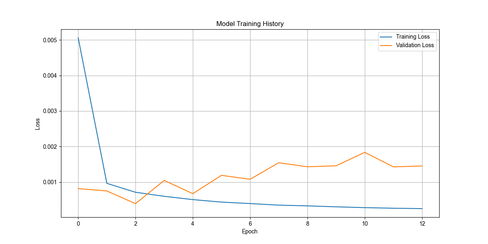
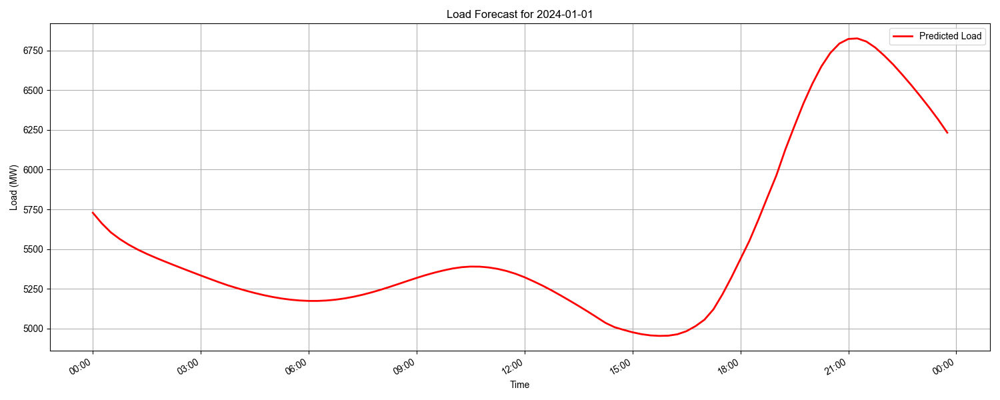

可视化结果
模型训练过程

图像说明：
- 横轴：训练轮次（Epoch）
- 纵轴：损失值（Loss）
- 包含两条曲线：
- Training Loss（训练损失）：表示模型在训练数据上的表现
- Validation Loss（验证损失）：表示模型在验证数据上的表现
图像用途：
- 观察模型是否正常学习
- 判断是否存在过拟合或欠拟合
- 评估模型训练的收敛情况
负荷预测结果

图像说明：
- 横轴：时间（24小时，15分钟间隔）
- 纵轴：负荷值（MW）
- 红色曲线：表示预测的负荷值
图像用途：
- 直观展示全天96个时间点的负荷预测结果
- 观察负荷变化趋势
- 分析预测结果的合理性
生成文件说明
数据文件
normalized_data.csv
- 包含归一化后的历史负荷数据
- 列说明：
- Time：时间点
- normalized_load：归一化后的负荷值（范围0-1）
- 用途：为模型训练提供标准化的输入数据
predictions_2024_01_01.csv
- 包含2024年1月1日的负荷预测结果
- 列说明：
- datetime：预测时间点（15分钟间隔）
- predicted_load：预测的负荷值（MW）
模型文件
scaler.save
- 保存的归一化器参数文件
- 用途：
- 确保预测值的反归一化过程与训练数据一致
- 便于后续使用相同的归一化标准
load_prediction_documentation.txt
- 项目的技术文档
- 内容包括：
- 算法选择说明
- 实现过程详解
- 模型构建说明
- 预测过程说明
- 结果分析